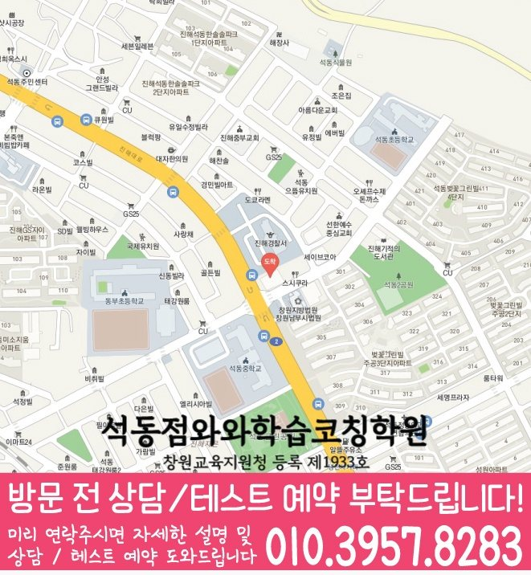

High school Korean · English · Math
경화동 고등학생 국영수학원
경화동 고등학생 국영수학원 선택 전 고등 내신 자료, 최근 오답과 과목별 가능 학년, 센터 위치·비용 확인 기준을 안내합니다.
01 Quick answer
경화동에서 먼저 확인할 내용
경화동에서 고등학생 국영수학원을 찾는다면 와와학습코칭센터 석동점의 과목별 가능 학년을 먼저 확인하세요. 학생이 사용하는 학교 자료와 현재 교재를 직접 확인하고, 학생의 실제 풀이 기록에 맞게 세 과목을 같은 분량으로 늘리기보다 과목별 완료 기준과 재확인 날짜를 정해야 합니다.
대표 학생 상황
학교별 시험 경향을 막연히 알고 있지만 채점 후 해설만 읽고 넘어가는 편이고, 선생님 피드백을 다음 과제에 적용하지 못하는 경향이 있어 자기주도 시간의 사용처를 분명히 해야 하는 고등학생


010-6839-8283상담 전 핵심 안내
경상남도 창원시 경화동에서 고등학생 국영수 관리를 고민한다면, 첫 상담에서 학생의 시험지와 학습 루틴을 함께 보는지부터 확인하는 편이 좋습니다. 이 사례를 바탕으로 경화동 학생에게 필요한 점검 순서를 확인합니다. 세 과목을 함께 계획하더라도 경화동 학생의 오답 원인과 완료 기준은 따로 확인합니다. 또한 제공된 학교 정보와 주소, 주간 학습 시간처럼 상담에서 확인할 자료를 함께 살펴 상담 전에 확인할 질문을 정리합니다.
경화동 고등학생 국영수학원 상담 전 첫 점검 포인트
지역 상담에서 먼저 확인되는 고민은 “경화동 고등학생 국영수학원에서 우리 아이가 세 과목을 모두 따라갈 수 있을까”라는 점입니다. 경상남도 창원시 경화동 기준으로는 고등 국영수를 한꺼번에 늘리는 계획보다는 최근 평가 자료에서 보완 순서를 먼저 찾아야 합니다. 고등학생의 주간 실행 기록에서 우선 조정할 과목과 단원을 찾아야 합니다. 경화동 상담 전에는 최근 범위와 틀린 유형, 과제 완료 시간을 준비해 세 과목의 우선순위를 나눠 보세요. 실행 가능한 계획은 경화동 학생의 이번 주 과제와 재풀이 기준을 작게 나눌 때 시작됩니다.
경화동 고등학생 학습 과정 운영 안내와 주간 학습 시간 체크
주간 학습 시간을 기준으로 경화동 국어·영어·수학 학습 계획을 비교할 때는 수업 이름보다 학생의 부족한 단원에 맞게 조정되는지 확인해야 합니다. 경화동 고등학생에게 필요한 국영수 수업은 강의식, 개별 점검식, 보강식 중 무엇이 맞는지 학생 상태에 따라 달라집니다. 경상남도 창원시 경화동 상담에서는 정규반이나 특강 여부와 함께 과제 피드백, 결석 보강, 시험 전 점검 방식이 이어지는지 물어보는 것이 좋습니다. 경화동 고등학생 상담에서는 최근 교재의 풀이 표시를 과목별로 나누어 우선순위를 기록합니다. 경화동 고등학생 상담에서는 과목별 오답 원인을 학교 일정과 대조해 실행 가능한 분량을 정합니다. 숙제를 반복해도 정확도가 안정되지 않는다면 개념 이해와 실제 적용 단계를 따로 점검해야 합니다. 경화동에서 주간 학습 시간도 함께 확인하는 가정이라면 학생의 하루 흐름과 과목별 피로도를 먼저 점검해야 합니다. 경상남도 창원시 경화동 고등 세 과목 진단은 점수와 함께 국어 읽기, 영어 해석과 수학 조건 파악 과정을 나누어 봅니다. 고등 국어·영어·수학 관리 기준에서는 학생이 “모르겠다”라고 말하는 지점을 다시 쪼개어 개념 부족인지, 문제 접근 순서의 문제인지, 복습 부족인지 나누는 것이 좋습니다.
경상남도 창원시 경화동 고등학생 시험 대비 루틴
경화동 국어·영어·수학 학습 계획에서 내신 대비는 시험 기간에만 갑자기 시작되는 과정이 아닙니다. 경화동에서 같은 실행 문제를 보이는 학생에게는 수행평가가 겹치면 지필 대비 시간이 줄어들 수 있으므로 주간 계획에서 과목별 최소 학습량을 따로 잡아야 합니다. 경상남도 창원시 경화동 고등학생이 국어·영어·수학을 함께 관리하려면 고등학생 내신은 하루 집중보다 누적 관리가 더 큰 영향을 주므로, 평소 과제와 시험 대비를 분리하지 않는 편이 좋습니다. 고등 국어·영어·수학 관리 기준에서 내신 대비는 새 문제를 많이 푸는 것보다 학교 수업 내용과 오답 기록을 다시 연결하는 과정이 중요합니다.
경상남도 창원시 경화동 국영수 통합 관리 방법
과목을 묶어 계획해도 읽기, 해석, 풀이에서 막히는 지점은 각각 기록해야 합니다. 경화동 고등학생의 수학 학습은 공식을 외운 뒤 조건 해석, 식 세우기와 검산 단계를 나누어 확인합니다. 경상남도 창원시 경화동에서 국어 오답은 답을 고른 이유를 말하게 해 우연히 맞힌 문항까지 구분합니다. 경화동 고등학생 세 과목 학습 상담에서 영어 계획을 세울 때는 단어 암기량만 늘리기보다 문장 구조와 해석 순서를 함께 확인합니다. 문법 문제와 독해를 따로 보지 말고 문장 구조를 읽는 과정에서 적용 여부를 확인하세요. 경화동 과목 수보다 중요한 것은 세 과목의 과제와 복습 시간이 한 주 안에서 무리 없이 이어지는지입니다. 경상남도 창원시 경화동에서 세 과목 일정이 겹치는 고등학생에게는 과제량과 복습 시간을 현실적으로 조정하는 과정이 필요합니다.
경화동 학교 일정과 현재 교재를 함께 확인하기
가정에서 기록을 준비하면, 확인되지 않은 학교명을 넣지 않기 위해 경화동 학교 목록은 표시하지 않습니다. 실제 학습 범위를 확인하면, 학생이 가져온 시험 범위표·학교 프린트·수행평가 일정 자료를 기준으로 상담합니다.
상담 전에 정리해 보면, 학교 목록이 없어도 현재 교재와 과제, 평가 자료를 과목별로 준비하면 경화동 학생의 보완 순서를 구체적으로 확인할 수 있습니다.
02 Consultation examples
경화동 학부모 상담 상황 예시
아래 내용은 실제 고객 후기나 성적 결과가 아니라, 상담에서 확인할 질문을 이해하기 위한 상황 예시입니다.
최근 학교 학습 준비가 한 과목에 치우친 경화동 고등학생을 가정했습니다. 학부모는 현재 교재와 학교 자료를 바탕으로 국어·영어·수학의 병목을 따로 듣고, 가정에서 확인할 기록을 정리합니다.
경화동에서 제공된 고등학교 목록이 없어 학생의 실제 시험 범위표·학교 프린트·수행평가 일정 자료를 직접 준비해 질문하는 상황입니다. 학부모는 학교명 자체보다 시험 범위와 수행평가 일정이 수업 계획에 반영되는지, 다음 확인 시점이 언제인지 기록합니다.
03 FAQ
경화동 고등학생 국영수학원 자주 묻는 질문
학부모님이 상담 전에 자주 확인하는 내용을 질문과 답변으로 정리했습니다.
경화동 고등학생 국영수학원을 알아볼 때 학생 상태를 어떻게 확인하나요?
시험 일정은 알고 있지만 실행 가능한 주간 분량을 정하기 어렵다면 최근 교재와 학교 자료를 가져가 보세요. 경화동 상담에서 집중 과목과 최소 복습량을 구분할 수 있습니다.
경화동 고등학생의 국영수 오답은 같은 방식으로 관리하나요?
경화동 상담에서는 국어는 답의 근거 설명, 영어는 어휘·구문·본문 적용, 수학은 개념·유형·계산 과정을 구분해 기록합니다. 주간 계획에서는 각 기록을 보고 다음 과제량을 조정해야 합니다.
경화동 고등학교 목록이 없는 경우 상담은 어떻게 준비하나요?
제공 자료에서 경화동 고등학교 목록을 확인할 수 없어 특정 학교를 추정하지 않습니다. 현재 시험 범위표·학교 프린트·수행평가 일정 자료와 센터의 가능 학년을 상담에서 함께 확인하세요.
경화동 수업 시간표와 교습비 자료는 상담 전에 볼 수 있나요?
경화동 상담 전에는 실제 방문 위치를 위 센터 확인 정보에서 확인할 수 있습니다. 센터별 교습비 확인 버튼에서 제공 자료를 볼 수 있습니다. 마지막으로 개설 과목, 가능 학년과 통학 가능한 수업 시각을 기록해 비교하세요.
04 Continue
경화동 페이지 이동
카테고리 전체 지역 또는 앞뒤 지역 안내로 이동할 수 있습니다.